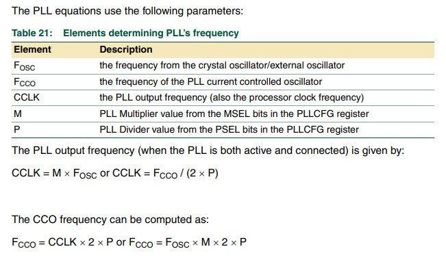
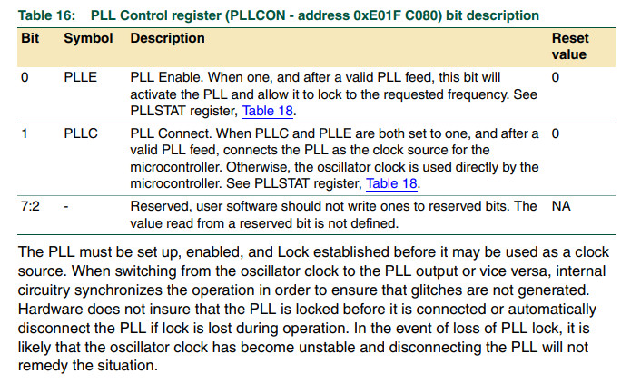
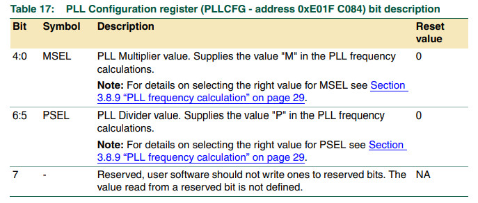
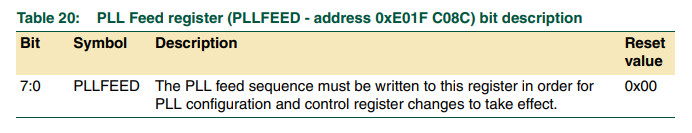

參考資料：
https://www.keil.com/dd/docs/datashts/philips/user_manual_lpc2101_2102_2103.pdf
PLL Input:10MHz~25MHz，PLL Output:10~60MHz, CCO:156MHz~320MHz




.equ IODIR, 0xe0028008
.equ IOCLR, 0xe002800c
.equ IOSET, 0xe0028004
.equ PLLCON, 0xe01fc080
.equ PLLCFG, 0xe01fc084
.equ PLLFEED, 0xe01fc08c
.text
.align 2
.global _start
_start: b reset
_undef: b .
_swi: b .
_pabort: b .
_dabort: b .
_reserved: b .
_irq: b .
_fiq: b .
reset:
ldr r0, =PLLCON
ldr r1, =0x03
str r1, [r0]
ldr r0, =PLLCFG
ldr r1, =0x24
str r1, [r0]
ldr r0, =PLLFEED
ldr r1, =0xaa
ldr r2, =0x55
str r1, [r0]
str r2, [r0]
ldr r1, =IODIR
ldr r2, =(1 << 22)
str r2, [r1]
loop:
ldr r0, =IOCLR
ldr r1, =(1 << 22)
str r1, [r0]
ldr r4, =500000
1:
nop
subs r4, r4, #1
bne 1b
ldr r0, =IOSET
ldr r1, =(1 << 22)
str r1, [r0]
ldr r4, =500000
1:
nop
subs r4, r4, #1
bne 1b
b loop
.end
完成